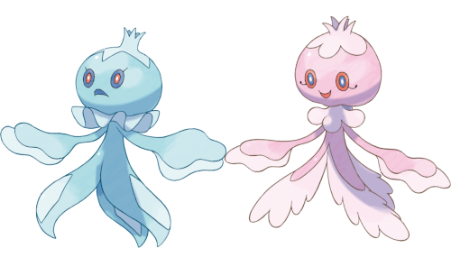
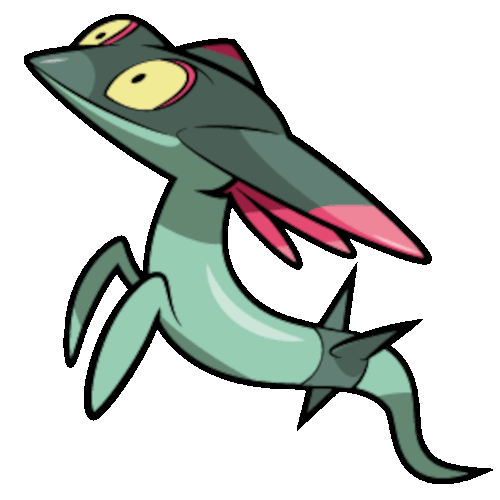
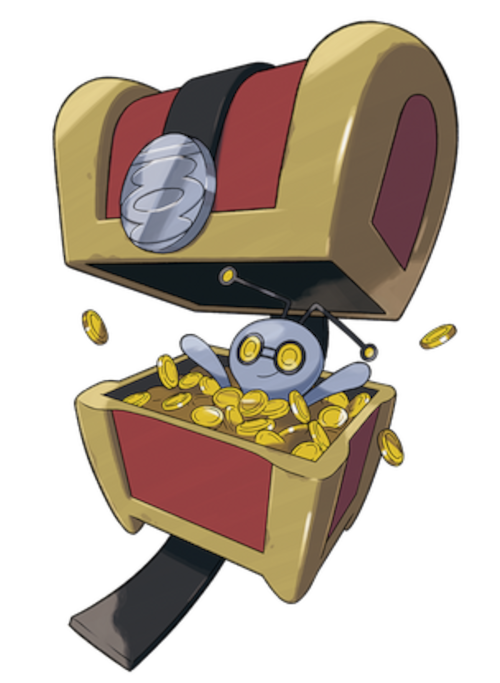

History
Here is a summary of all the ghost Pokemon introduced in the different generations, in order.
Generation 1 (1996)
The generation that started it all, we ended up with only a small handful of ghost pokemon from this generation, but they have remained iconic throughout the rest.
Gastly
This Pokemon is mostly made of a poisonous gas, hence its name. It often has to hide away in wind storms or its body will blow away. Since it is the first of its evolutionary line, it is really weak. Gastly and its whole line of evolutions all have the Ghost/Poison dual type. Why it was given the poison secondary type instead of having it be pure ghost was likely due to it being able to be countered by Alakazam's psychic type attacks, all for balance.
Haunter
Haunter is known for being somewhat of a prankster, which really set the theme for many future ghost Pokemon. It is able to learn hypnosis and dream eater in the games, so it can actually disable an opponent, damage it, and restore its health all in one go if it is successful. It is stronger than gastly as expected, but it pales in comparison to its evolution.
Gengar

Gengar got its name from the word "doppelganger", because it often imitates people's shadows. This Pokemon was one of the four 'trade-to-evolve' Pokemon from the first generation. It was also quite the powerhouse, and this mostly continued throughout the series where it was a great special sweeper. Later on, it got a special evolution, but this will be covered later. It was essentially this Pokemon and its previous evolution that got me into the ghost Pokemon in the first place. They were strong, and I just like the whole shadowy prankster deal they have.
Generation 2 (1999)
Not much to say here, we only ended up with one new ghost pokemon in this generation.
Misdreavus
Misdreavus may have been the only new ghost Pokemon for this generation, but it was also the first pure Ghost-type. It is known for drawing people in with its cry. It honestly wasn't that great in battle, which may be why they decided to give it an evolution in later generations. Not much else to say here, but it was in the next generation that several new ghosts were added.
Generation 3 (2002)
This generation finally added several new ghost types, six to be exact, including possibly one of the strangest Pokemon in the series.
Shedinja
Arguably the strangest Pokemon in the whole series, it is said that staring into the hole in its back will steal your soul, and is Ghost/Bug type. That's not why its strange, though. It technically evolves from another Pokemon, but technically it doesn't. When a Nincada evolves into a Ninjask, if you have an empty slot in your party, you end up with an additional Pokemon named Shedinja. This Pokemon is essentially the former shell of Nincada that was discarded during the evolution. It gets even weirder, though. No matter how much you level up Shedinja, its max HP will always just be 1. This might seem totally useless then, but the reason for this restriction is its unique ability. The ability Wonder Guard makes it so only super-effective attacks can damage this Pokemon. The problem, is that due to its type combination, it has several weaknesses, and even sandstorm or hail can kill it off in one turn. In Gen 3, it was still useful if you knew your opponent had nothing that could land a hit on it, but it never really held up in competitive. Even so, I still say that due to its details, this is the strangest Pokemon out there.
Sableye
This Pokemon has gems for eyes, and is Ghost/Dark type. This type combination was important and special during the generations before the Fairy type was introduced, because due to the combination, there were no moves that were super-effective to it. The problem is that aside from in-game usage, it wasn't good in competitive due to its weak stats and narrow moveset. Later it got a mega-evolution, but this still didn't really help it much.
Shuppet
A shadow puppet Pokemon, it feeds off of emotions. Nothing real exciting here, but it is another pure ghost type Pokemon.
Banette
A marrionette Pokemon, the evolution of Shuppet. Its story is that it was originally a doll that was tossed away by some child, and it somehow came to life to seek revenge. It wasn't great in battle, even after getting a mega evolution later on in the series. It just doesn't hold up like some of the powerhouse ghost Pokemon like Gengar and other later ones.
Duskull
Another pure ghost type, and the trend of not that great ones continues. It can pass through any kind of wall, and often chases people or prey until sunrise.
Dusclops
Legend has it anything that goes into its hollow body is never to be seen again. It is the evolution of Duskull, another pure ghost type. It doesn't really have much to say for itself, aside from getting en evolution in the next generation.
Generation 4 (2006)
This generation introduced seven new ghost Pokemon, including some evolutions to older ones, one that can change form, and finally a legendary ghost-type.
Drifloon
Drifloon is a balloon ghost Pokemon, known to make people that tug on it disappear. As is, it is not a great Pokemon, but that's because its evolution is much better. Both it and its evolution are Ghost/Flying types.
Drifblim

Finally, we get a ghost Pokemon that is very bulky. It still is the ghost Pokemon with the highest HP stat in the series to this day. It can be good in-game, but it still isn't that great in competitive. Regardless, it is a cool ghost type, and its inverted color shiny looks great.
Mismagius
Mismagius is the evolution of misdreavus. It maintains its sole ghost type in its evolution, and while its stats are better, it still isn't that great in comparison to Gengar.
Spiritomb
This Ghost/Dark type Pokemon is one of the first that required a strange side quest to obtain it. You had to talk to someone in the underground in Gen 4 several times and then place an item in an altar to encounter it. Since we still had no fairy type yet in this generation, its type matchup meant nothing was super-effective against it. Given this and the fact that it was bulkier than Sabeleye, it was a bit more usable at least in-game. Legend has it it is comprised of over a hundred different souls, and was bansished for 500 years. If they would have made it a bit better in its stats, I would have been happy to use it in competitive.
Dusknoir
Dusknoir is the evolution to Dusclops, keeping the pure ghost type in its evolution. It can learn a variety of different punching moves of different types, and though it is slightly bulky, it doesn't hold up well in competitive. Its evolution required a trade with Dusclops holding the Reaper Cloth item. It has an antenna on its head, supposedly it uses this to receive orders to bring souls to the underworld.
Froslass
This Pokemon is Ghost/Ice type, and it is female only. Instead of evolving from another ghost type, it evolves from a snorunt when given the Dawn Stone. It has decent speed, and with access to Destiny Bond, it has a good trick up its sleeve. Its special attack isn't that amazing, but it can kind of hold its own to some degree. At least this Pokemon gives a ghost team some edge against dragon types.
Rotom
Rotom is a Ghost/Electric type Pokemon. It is known for possessing different electronics and causing mayhem this way. Given this ability, in the games it can take a variety of different forms, but since these forms all replace its ghost typing with a different type, I won't describe them any further here. It has great speed and decent special attack, but most people don't use its normal form in competitive and instead use one of its appliance forms. Like Froslass, it has access to Destiny Bond and a good speed stat, so it has a way to take out stronger foes if it can't really do much else against them. This Pokemon played a more major role in Gen 9, where every smart phone was made to be possessed by a Rotom, so in some sense everyone in the game was using Rotom.
Giratina
At last, we got a legendary ghost type Pokemon. This one is Ghost/Dragon, and it had an alternate form as well. This Pokemon also got to be the mascot legendary of Gen 4 in Pokemon Platinum, where it played a more major role in the story of the game. Its unique move was called "Shadow Force". In relation to Dialga and Palkia, it completes the theme of the three involving creation. It typically lives in the Distortion World, and having it hold the Griseous Orb changes its form.
Generation 5 (2010)
This generation yielded nine new ghost Pokemon, finally including some that actually held up well in competitive, one of which was argued to be the best wall of its generation.
Yamask
This is another pure ghost type, and its story is that the mask it carries is actually its face from when it was still alive. There's not much to say about this one, but its evolution was much greater.
Cofagrigus
Like its pre-evolution, it is also pure ghost type. Its design was based off of the Egyptian sarcophagus. This was essentially the first good wall of the ghost types, given its great bulky defense capabilities. While it doesn't have any healing moves to let it be a great stall wall, it held up great in competitive.
Frillish
This Pokemon was Ghost/Water type, and it was the first of ghost types to have a different-looking form for male and female. It is said to drag its prey miles down into the ocean.
Jellicent
Like its pre-evolution, it is both water and ghost type, and maintains the different forms based on gender. With access to Scald and Hex, it could potentially burn the opponent and then do extra damage with Hex. It also could use Giga Drain to give it a chance to restore some HP along with doing damage.
Litwick
The first fire and ghost type, its candle is said to be burning souls that it feeds off of. It is only the first stage in a full 3-stage evolution line.
Lampent
The evolution of Litwick, it likes to hang around hospitals, waiting for people to die. There's not much to it, but its next stage is really something.
Chandelure
The next evolution after Lampent, finally another good sweeper ghost type. This Pokemon actually had better stats than Gengar, but at the cost of having the weaknesses of the fire type. Its evolution required a dusk stone. While it could be argued that it was better than Gengar in competitive, its weaknesses made it ultimately less usable.
Golett
The first Ghost/Ground type Pokemon, it was made out of clay. As typical for the pre-evolutions, there's really not much to be said about it.
Golurk
This Pokemon is the evolution of Golett, keeping its Ghost/Ground type. It was based off of Jewish folklore about the golem that would protect people, coming to life from clay. It looks cool, but it didn't have much value in competitive.
Generation 6 (2013)

This generation added a whopping 11 new ghost Pokemon. This was also the generation that introduced the Mega Evolution, three of which are ghosts.
Honedge

This Pokemon and its line of evolutions were the first Ghost/Steel types. Its story is that it is a cursed sword, and if someone grabs its hilt it will take their soul.
Doublade
The evolution of Honedge, it split into two different swords. The two swords are telepathically linked, allowing them to orchestrate their attacks.
Aegislash
This is a real interesting Pokemon, as it can change forms during battle. If it uses an attack move, it changes to its blade form and its stats change accordingly. If it uses a support move, it changes to its shield form and becomes bulkier. On top of that, it has a unique move called "King's Shield", which works like Protect except with the added bonus of lowering the attacking opponent's attack stat by 2 stages if they had used a contact move on Aegislash. This may have been the best ghost Pokemon since Gengar, and now it was starting to look like a more decent ghost team could be built.
Phantump
This Pokemon and its evolution is Ghost/Grass type, and it is a spirit that inhabits trees.
Trevenant
This evolution to Phantump is known to eat people that try to wreck forests, and it can actually control entire forests with its root system. This was also a trade-to-evolve Pokemon, for whatever reason.
Pumpkaboo
This is another Ghost/Grass type Pokemon, with a unique deal. Along with its evolution, this Pokemon comes in 4 different sized forms, each with different stats, with the largest form having the highest stats. It was based on jack-o-lanterns.
Gourgeist
The evolution of Pumpkaboo, it likes to knock on doors (reference to trick-or-treating), and if someone answers it will take them away. Like its pre-evolution, it comes in 4 different sizes.
Hoopa (Confined)

This new legendary ghost/psychic Pokemon is a little dissapointing. While it is another legendary ghost type, its real usage is in its Unbound form, which replaces the ghost type part of it with the dark type. Considering how powerful Unbound Hoopa was, it would have been real nice if they had it keep the ghost type, but oh well. Additionally, this was also the first ghost Pokemon to be only obtained through an event.
Mega Gengar
This Pokemon is not an actual evolution of Gengar, but from the "Mega Evolve" feature of this generation, allowing one Pokemon to "evolve" during battle per battle. It maintains the same typing as Gengar, and its story is that part of its body is in another dimension. Not only is it more powerful than regular Gengar, it comes with an ability that actually got it banned from competitive. The ability is called "Shadow Tag", and prevents the opponent's Pokemon from switching out. Due to Mega Gengar's amazing stats and attack type spread, most Pokemon would get destroyed by it unless they could one-hit Mega Gengar. Gengar was already really powerful, but due to all the new Pokemon in these generation that may have had better stats, it seemed they gave Gengar this evolution to try and keep it up with the times.
Mega Sableye
This Mega Evolution of Sableye maintains the same type combination of Ghost/Dark. It blocks attacks in this form with the jewel that was formerly on its back. It gave it better stats, making it a bit more usable, but why bother with this when you could use Mega Gengar instead? It seems like they should have just given Sabeleye a real evolution with that same stat increases, but I guess they needed more Pokemon to use with the Mega Evolution feature.
Mega Banette
The Mega Evolution of Banette, the story here is that its curse became so intense that it actually spilled out from Banette's zipper. Like Mega Sableye, it does make it a bit more usable, but there are better choices out there for competitive.
Generation 7 (2016)
This generation offered up another 11 new ghost types, including some more legendaries and some other particularly interesting ones. This also included my all-time favorite ghost Pokemon, more on that later.
Decidueye
While the two pre-evolutions of this Pokemon didn't have the ghost type, this is the first starter evolution that did include the ghost type, along with its grass type. It is based on the idea of Robin Hood, and as such, likes to fire quill arrows.
Oricorio (Sensu Style)
Oricorio is a bird Pokemon with several different forms, this "Sensu Style" one in particular being Ghost/Flying type. It is known to gather spirits with its dance.
Sandygast
A ghost/ground type, looks like a pile of sand. If someone puts their hand into its mouth, it takes control of them and forces them to build it bigger.
Palossand
The sand castle evolution of Sandygast. It makes people build it bigger, then it consumes them. It can work out well in-game, but unfortunately it doesn't really hold up in competitive.
Mimikyu

It was this generation that introduced my all-time favorite Pokemon, Mimikyu. It is ghost/fairy type, and supposedly anyone who sees its real body will die instantly. It wears a cloak to try to draw people in, and crudely resembles a Pikachu. Due to its Disguise ability offering it a free hit from its opponent, it seems it was pretty much made for Swords Dance, which is available to it. On top of that, having access to Play Rough, it can take out many dragon Pokemon. While its only known form even by generation 9 is the fake Pikachu cloak, it seems to just be begging for them to come out with potentially all kinds of other cloaks, even if it is just for different looks. It still hold up quite well in modern competitive.
Dhelmise
An anchor Pokemon with the ghost/grass type, not that we really needed another of that type combination. It was reborn as a ghost Pokemon after a peice of seaweed merged with the sunken ruins of a ship.
Lunala
Another Ghost/Psychic legendary, arguably making up for the dissapointment of Hoopa from the previous generation. It was the mascot legendary of the Moon version, and apparently devours light.
Dawn Wings Necrozma
This is the result of Necrozma completely taking over Lunala, and is also ghost/psychic type. It was the mascot legendary for the expanded Moon version, Ultra Moon.
Marshadow
A ghost/fighting type that can hide in people's shadows and read their feelings. It was another event-only legendary, and the first of this type match-up.
Blacephalon

A very bizarre non-Pokemon Pokemon. What I mean is that it is considered an "Ultra Beast", essentially like a Pokemon, but from another dimension. It was exclusive to the Ultra Sun version. It is clown-like, and would actually explode its head to lure prey in.
Alolan Marowak
This is the first ghost type of the region-specific alternatives to already known Pokemon. It is ghost/fire type, and it can light the bone it carries supposedly with the soul of its mother, who helps it fight.
Generation 8 (2019)
We have a record breaker here, this generation added a grand total of 16 new ghost Pokemon! Some were brand new, while some were more region-specific alternatives to already known Pokemon from previous generations.
Sinistea
This Pokemon came to be after a cup of black tea was abandoned, it and its evolution are pure ghost type. The story behind it is honestly kind of lacking, and as such, the Pokemon itself is too.
Polteageist
These Pokemon are the evolution of Sinistea, and they can multiply by pouring themselves into cups of leftover tea. This one, and its pre-evolution, come in two forms: Authentic and Forgery.
(Galarian) Corsola
This region-specific form of the previously known Corsola stems from a change in the climate, so it looks like it is bleached. It is pure ghost type, and curses those who kick it.
Cursola
The evolution of the Galarian form of Corsola, it broke free from its shell due to a build-up of excess spirit energy.
(Galarian) Yamask
Another region-specific form of a Pokemon from a previous generation, the main difference is its Ground type along with the ghost type, and it carries a rune stone instead of a mask.
Runerigus
The evolved form of the Galarian Yamask, it has a very different look from Cofagrigus. Anyone who touches its runestone will witness the horrific memories of the imagery inscribed on them. It Galarian Yamask evolves into this form after going through a certain stone arch after receiving 49 HP of damage.
Dreepy
This is the first non-legendary ghost/dragon type matchup, along with its evolutions with the same types. It is very weak on its own, but the same can't be said for its evolutions.
Drakloak
The evolution of Dreepy, capable of flying at 120 miles per hour. It likes to take care of Dreepy, letting them rest on its head.
Dragapult
This evolution of Drakloak cares for Dreepy so much, it actually shoots them from the hollow horns of its head, with its signature move "Dragon Darts". Kind of weird, but this Pokemon is excellent. It has great speed, and its attack stat is pretty decent as well. Unfortunately, its best physical ghost move is Phantom Force, but since it is a two-turn move, the opponent often just switches to something that can take the hit. If this Pokemon could instead learn Shadow Claw, it would be much more amazing. Regardless, its Dragon Darts move is great, it always hits twice, which means it's a great Focus Sash buster.
Spectrier
While not related to Ponyta or Rapidash, it is a ghosty type horse Pokemon, a pure ghost type. It seems to have been based off of the idea of the apocalyptic horsemen's horses. It likes silence, and supposedly its kicks to people causes them to have an out of body experience.
Calyrex
Its a Pokemon riding another Pokemon, thats new. Due to the way it is set up, it has the ghost type of the Spectrier it is riding, while carrying its own Psychic type as well. It also acquires Spectrier ability.
Basculegion
A water/ghost type, evolves from a special Basculin native the Hisui region. Its story is that it was possessed by the spirits of Basculin that didn't survive the migration upstream, and these spirits help it fight.
(Hisuian) Typhlosion
Another region-specific alternative, this one is the ghost/fire type alternative to the starter evolution Typhlosion, evolved from Quilava. It can't control its emotions, and will be quick to burn a provoker into nothing, not even ashes.
(Hisuian) Zorua
This strange type matchup of ghost/normal has a grudge it carries against humans and other Pokemon.
(Hisuian) Zoroark
The evolution to the Hisuian Zorua, it also has the ghost/normal type matchup. The bonus of this type combination is that since normal is unaffected by the ghost type, this effectively negates the ghost weakness that all ghost types carry, which is great.
Gigantamax Gengar
This Pokemon is only encountered in a max raid battle, a concept introduced in this generation. Apparently, its large, gaping mouth leads to the afterlife instead of into its body.
Generation 9 (2022)
This generation may be the greatest gift to ghost type fans so far. While it did only add an additional 10 new ghost types, several of these are amazing, including Pokemon #1000.
Skeledirge
Another ghost type starter evolution. Its pre-evolutions had only the fire type, while Skeledirge is both ghost and fire type. Its name comes from songs sung at funerals, and its own song causes its enemies to lose the will to battle. Its unique signature move is "Torch Song", which is fire type, does damage, and as an added bonus raises its special attack one stage.
Ceruledge
One of two evolutions of Charcadet, this one is ghost/fire type. It is exclusive to violet version, and it packs quite a punch. It has great attack and speed, and with the unique fire type move of "Bitter Blade", it can do damage and heal itself at the same time. Additionally, with a varied moveset, it works great in both in-game and competitive.
Bramblin
There's really not much to say about this one, its ghost/grass type, and is essentially a huanted tumbleweed.
Brambleghast
The evolution of bramblim, it is just a slightly larger haunted tumbleweed.
Greavard
This ghost type dog absorbs the life force of the people around it, it has a candle on its head.
Houndstone
The evolution of Greavard, it is slightly bigger, with a tombstone on its head. Its signature move "Last Respects", ended up getting it banned in competitive. The reason is that while this move's power starts at just 50, it increases by 50 for each knocked out Pokemon in your party. This means that in a 6 vs 6 singles battle, if it goes after your whole team is wiped out, this move's power will be 300! Combine it with a Choice Scarf, and its totally brutal.
Annihilape
The new evolution to the all too familiar Primeape, this Pokemon can be seriously powerful in battle. It is ghost/fighting type, and it evolved from Primeape after becoming intensely full of rage, so much so that its physical body could no longer contain it. It evolves into this form after Primeape uses "Rage Fist" 20 times and then levels up. With a STAB for Rage Fist, and its potential bulkiness, this one can throw around some serious damage if used correctly.
Flutter Mane
The only ghost type of the so-called "Paradox Pokemon" from this generation, it also is the fairy type. With its stats and its varied moveset, it is up at or near the top of the list of Paradox Pokemon. It is exclusive only to the Scarlet version, and it is essentially what Misdreavus came from, given it is a Pokemon from the past.
Gimmighoul
A pure ghost type that likes to manipulate people and Pokemon into adding to its coin collection.
Gholdengo
This Pokemon is the result of evolving Ghimmighoul, which requires an inventory of 999 Ghimmighoul Coins and a level up. It is Pokemon number 1000, congratulations! It makes a great tank as is, has the ghost/steel type, and the added bonus of not only a powerful, unique steel type move "Make It Rain", but it also has a unique ability called "Good As Gold". This ability prevents it from being affected by any status moves. It is made of pure gold possessed by a spirit, and not surprisingly since it already appears to be made of gold, it has no shiny form. Its tank build in competitive with access to Recover can work wonders in many situations. As a ghost Pokemon fan, how could anyone possibly ask for a better Pokemon #1000?
 Iron Tail
Iron Tail
 Magical Leaf
Magical Leaf